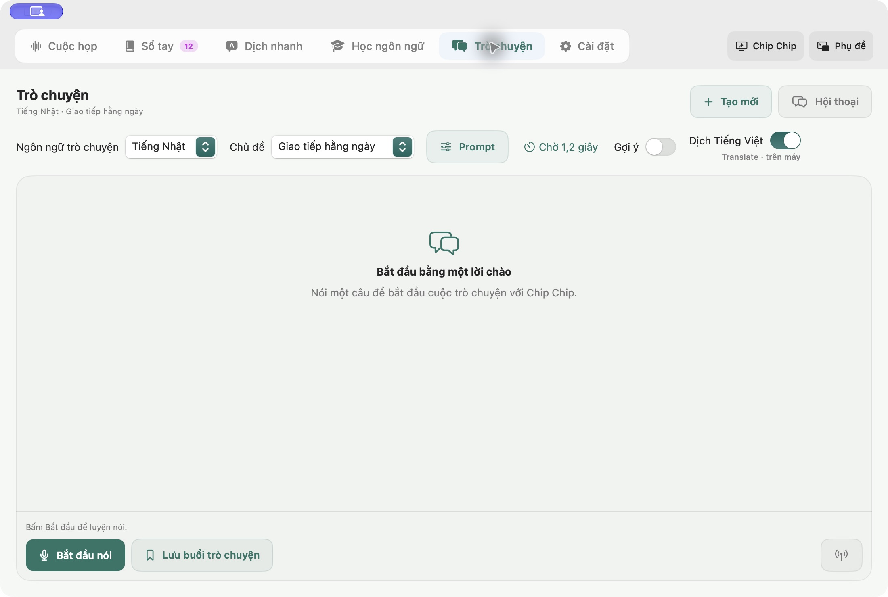
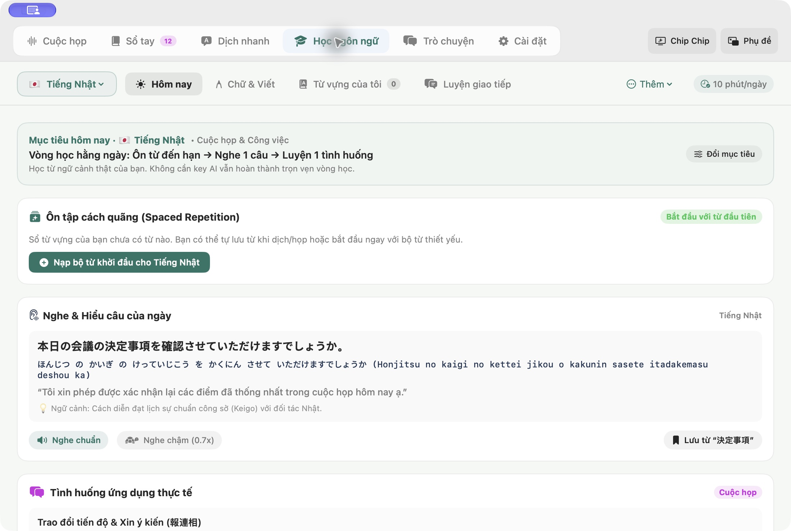
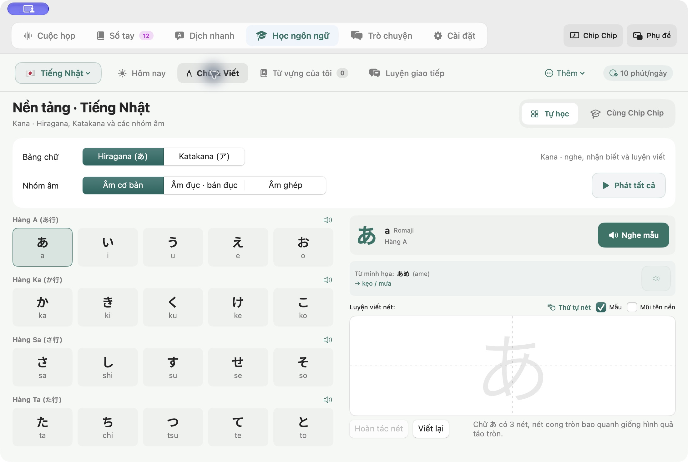
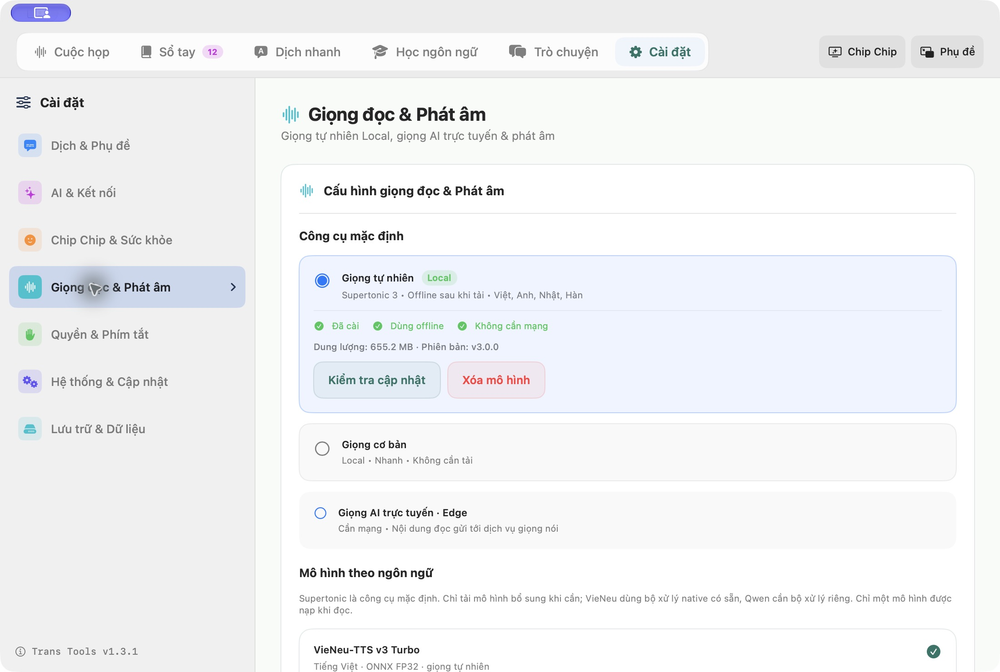
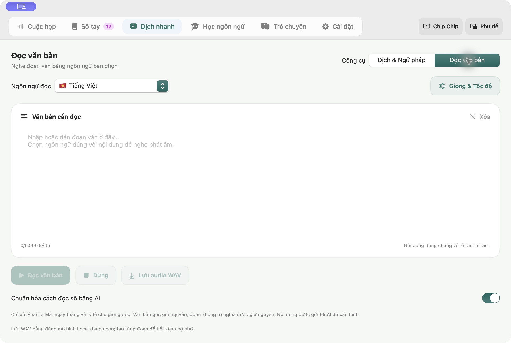
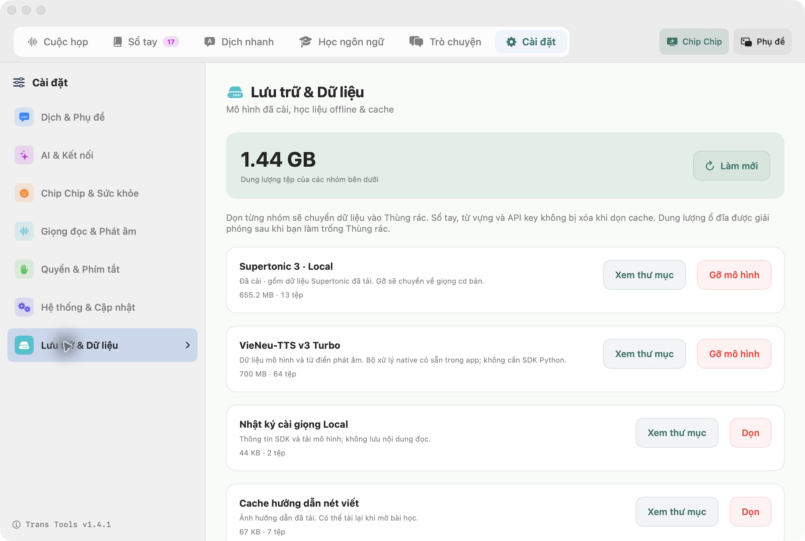

HƯỚNG DẪN · 04/10/2026
Luyện nói tự tin.
Đọc hiểu dễ dàng.
Hướng dẫn cho Trans Tools v1.4.1. Một số công cụ cần tải dữ liệu hoặc kết nối dịch vụ AI trước khi dùng.
1. Trò chuyện theo chủ đề
- Trong Cài đặt, kết nối bộ AI và chọn giọng đọc phù hợp.
- Mở tab Trò chuyện trên thanh điều hướng chính. Chọn ngôn ngữ và chủ đề: giao tiếp hằng ngày, công việc, du lịch, phỏng vấn, công nghệ, học tập hoặc chủ đề riêng.
- Chọn Prompt để mô tả vai trò và tình huống, ví dụ “Bạn là đồng nghiệp developer, hỏi tôi về cách debug API”. Chủ đề riêng cần nhập prompt. Bấm Bắt đầu nói, nói một câu rồi dừng để gửi. Menu thời gian chờ cho phép chờ 0,8, 1,2 hoặc 2 giây. Chọn 2 giây nếu bạn cần thêm thời gian nghĩ.
- Bật Dịch Tiếng Việt để xem bản dịch dưới mỗi lượt; tùy chọn ẩn khi chọn tiếng Việt. Gợi ý mặc định tắt; bật khi cần luyện phản xạ.
- Khi AI đang đọc, bấm Nói tiếp để dừng phần đọc và chuyển sang lượt của bạn.

Đây là giao tiếp theo lượt. Thời gian nhận câu trả lời và tạo giọng còn phụ thuộc kết nối, nhà cung cấp và hạn mức AI.
2. Tiếp tục một buổi đã lưu
Kết thúc buổi nói để lưu lại, hoặc bấm Lưu buổi trò chuyện. Mở Hội thoại trong tab Trò chuyện để tạo mới, mở lại hoặc xóa buổi. Bạn cũng có thể vào Sổ tay, chọn buổi luyện nói và bấm Tiếp tục trò chuyện. Lịch sử, chủ đề, prompt và bản dịch được mở lại; bấm Tiếp tục nói để nối tiếp. App cập nhật cùng buổi, giữ tên và ghi chú bạn đã sửa.
3. Chụp & dịch màn hình
- Mở menu Dịch & chỉnh câu → Chụp & Dịch màn hình, hoặc thử Option + S.
- Kéo chọn vùng có chữ. Hệ thống cần quyền ghi màn hình.
- Kiểm tra chữ nhận diện, sửa lỗi nếu cần và chọn ngôn ngữ nguồn/đích.
- Bấm Dịch, rồi Sao chép để dùng kết quả.
Nhận diện chữ chạy trên máy với Apple Vision. App ưu tiên Translate; khi không khả dụng sẽ thử AI đã cấu hình, sau đó Google. Văn bản chỉ được gửi đi khi bạn bấm Dịch. Câu quá ngắn, nhiều ngôn ngữ hoặc ảnh mờ có thể cần chọn lại ngôn ngữ.
4. Một vòng học mỗi ngày
Chọn tiếng Anh, Nhật, Trung hoặc Hàn. Ôn từ đến hạn, nghe một câu mẫu và luyện một tình huống. Chữ & Viết giúp bạn làm quen với bảng chữ cái và cách viết; Mục tiêu điều chỉnh nội dung theo nhu cầu công việc, đời sống hoặc phỏng vấn.


5. Chọn giọng đọc theo ngôn ngữ
Vào Cài đặt → Giọng đọc & Phát âm. Chọn ngôn ngữ rồi chọn công cụ và giọng. Lựa chọn được lưu riêng cho từng ngôn ngữ, dùng chung cho Trò chuyện, phụ đề, Sổ tay, từ vựng, Flashcard và Đọc văn bản.
Supertonic 3 là giọng Local mặc định cho bản cài mới, hỗ trợ Việt, Anh, Nhật và Hàn. Đọc giấy phép trước khi tải dữ liệu. VieNeu-TTS v3 Turbo là mô hình bổ sung cho tiếng Việt; bộ xử lý đã đi kèm app, chỉ tải dữ liệu khi bạn chọn cài. Giọng cơ bản là lựa chọn dự phòng; Edge cần mạng. Những lựa chọn đã lưu được giữ nguyên.
Chọn tốc độ, âm lượng rồi bấm Nghe thử. Bài học âm và chữ cơ bản dùng bản ghi tham chiếu riêng; TTS không thay thế nguồn phát âm mẫu. Nguồn học liệu được liệt kê trong Giới thiệu của app.

6. Nhịp phụ đề & chia câu
Chọn Nhanh, Cân bằng hoặc Đủ ngữ cảnh tại Cài đặt → Dịch & Phụ đề. Cụm ngắn chưa kết câu chờ thêm khoảng ngắt; câu đã chốt có thể dịch ngay. Lời nói liên tục được chia theo câu hoặc giới hạn khoảng 28 từ / 160 ký tự. Phần cuối đang nói dở tiếp tục cập nhật; chia câu không khởi động lại thu âm.
Chế độ Chỉ bản dịch giữ câu dịch gần nhất trong khi chờ câu mới. Kết quả dịch cho câu gốc đã thay đổi được bỏ qua; tự đọc chỉ phát câu đã chốt. Nhận dạng và dịch vẫn có thể sai, cần kiểm tra trước khi dùng làm biên bản.
7. Đọc văn bản & lưu audio
- Mở Dịch nhanh → Đọc văn bản, dán nội dung và chọn ngôn ngữ.
- Chọn giọng trong Cài đặt, bấm đọc và điều chỉnh tốc độ theo nhu cầu.
- Khi công cụ hỗ trợ xuất, chọn Lưu audio: WAV với mô hình Local đã cài, MP3 với Edge. Giọng cơ bản không hỗ trợ xuất.
Nếu đã cấu hình AI, có thể bật chuẩn hóa cách đọc số La Mã, ngày tháng và tỷ lệ. Nội dung được gửi tới AI đã chọn; văn bản gốc giữ nguyên. Kiểm tra bản đọc trước khi sử dụng hoặc chia sẻ.

8. Kết nối AI & chọn model
Vào Cài đặt → AI & Kết nối. Lưu API key của nhà cung cấp, tải danh sách model rồi chọn model hỗ trợ văn bản. Lựa chọn lưu riêng cho mỗi nhà cung cấp. Nếu model đã lưu không còn trong danh sách, chọn lại model khả dụng; khi tải danh sách thất bại, thử lại. Khóa và hạn mức thuộc tài khoản dịch vụ của bạn.
9. Quản lý lưu trữ
Mở Cài đặt → Lưu trữ & Dữ liệu, bấm Làm mới để xem dung lượng từng nhóm. Các nhóm tùy chọn không có dữ liệu được ẩn để dễ quản lý. Xem thư mục để kiểm tra, Dọn để xóa cache hoặc Gỡ mô hình để chuyển dữ liệu vào Thùng rác. App chặn dọn khi đang họp, đọc hoặc tải mô hình. Sổ tay, từ vựng, hội thoại và API key không bị xóa qua các nút dọn cache.
Dung lượng ổ đĩa chỉ được giải phóng sau khi bạn làm trống Thùng rác. Hãy kiểm tra dữ liệu trước khi làm việc này; mô hình đã gỡ cần tải lại để sử dụng.
